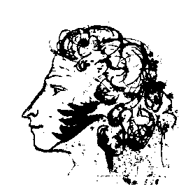

Слово про Олександра Сергійовича Пушкіна.
"Пишатися славою своїх предків не тільки можна,
але і необхідно; не шанувати оної є ганебна малодушність
"О. С. Пушкін
Дорогі миколаївці, земляки!
Вчора виповнилося рівно 200 років із того дня, коли світу з'явився Геній, велич якого нами ще цілком не усвідомлена. У Євангелії від Іоанна сказано: "На початку було Слово, і Слово було в Бога, і Слово було Бог. Усе через Нього почало бути, і без Нього ніщо не почало бути, що почало бути. В Ньому було життя, і життя було світло людей. І світло в тьмі світить, і тьма не охопила його... Було і Світло щире, Що просвіщає всяку людину, яка приходить у світ. У світі був, і світ Його не пізнав.. Прийшов до своїх, і свої Його не прийняли... ".
Я задаюся питанням, що тут сказано не про Рафаеля і Моцарта, не про Пушкіна і Шевченка?! І не знаходжу нічого зайвого, все правда, все істина й все точно сказано наперед про природу самих кращих представників Людства - Геніях світу цього. Кожен з них є самим яскравим виразником суті свого народу і водночас кожен з них є самим великим надбанням всього Людства, самим великим явищем людського Духу і Світлом щирим, що просвіщає нас, незалежно від національності і від країни. Усі Генії були Пророками, але як точно сказано в Біблії - немає Пророків у своїй Вітчизні! Саме тому тут йдеться: "У світі був, і світ Його не пізнав. Прийшов до своїх, і свої Його не прийняли."
Отже, у чому ж тут справа? Чи не в тому, як казав Пушкін, що ми ледачі і не зацікавлені? У відношенні до Пушкіна цього не скажеш. Щорічно по всіх кутках Землі виходить у цілому біля півтисячі різних статей, книг і інших публікацій, а в ювілейні роки все подвоюється. На превеликий жаль кількість не перейшла в якість. Досі не написано Академічної біографії поета, не завершено Літопис життя і творчості, немає Академічного повного зібрання творів із коментарями, немає Пушкінської енциклопедії, не правильно визначені адресати багатьох віршів, не зрозумілі поеми і проза. Мені здається, що пізнати будь-якого Генія неможливо без конгеніального мислення, а цього, на жаль, не може бути багато через суто природні обмеження. Так що, процес розуміння природи геніальності відданий вічності.
Горький казав, що життя Пушкіна було казково різноманітним, мені ж здається, що життя Пушкіна було ще більш геніальнішим, ніж його творчість. І справа не стільки в тому, що для будь-якого Генія його власне життя є основним джерелом творчості, а в тому, що Пушкін прожив своє життя з найбільшою ефективністю для свого головного призначення, висловленого в словах: "Дієсловом палити серця людей!". Життя Пушкіна, як і будь-якого Пророка, наповнено таємністю і глибоким символізмом і через те в творчості його немає прохідних віршів і творів, усі вони несуть у собі деякий таємний зміст і обов'язково божественний підтекст. Пушкін, як Пророк, знав собі ціну і знав, що багато послідовників будуть йти за ним, як він писав: "живлячи надії відкрити нові світи, йдучи слідами Генія".
Мені пощастило 19 років йти слідами Пушкіна і Даля, вивчаючи їхній зв'язок із Миколаївщиною. Саме завдяки любові до рідної землі, вдалося глибше проникнути у світ Генія Пушкіна і відкрити деякі з його священних таємниць. Попрацювавши більш як у 40 архівах і бібліотеках у 10-ти містах колишнього СРСР, я знайшов багато нового і невідомого. В результаті надруковано біля 40 статей, поставлено пам'ятник і дві меморіальні дошки поетові роботи заслуженого скульптора Ю.А.Макушина, його дружини і сина, а також архітектора О.П.Поповій. У музеї Суднобудування і флоту експонується відновлена по архівним даним модель бригу "Мінгрелія", виконана інженером Г.Г.Кузнєцовим. Не буду докладно говорити про нашого земляка В.І.Даля, 200-річний ювілей якого ми зобов'язані гідно відзначити в 2001 р. Зауважу тільки на те, що Пушкін і Даль прекрасно доповнили один одного у відношенні того, що можна назвати найбільш важливим напрямком у розвитку будь-якої культури - її мови. Пушкін, як відомо, створив нову, сучасну російську мову, а Даль зберіг для нащадків у своєму "Тлумачному словнику" допушкінську мову. Хто знає, можливо саме з цієї причини Далеві, що жив у той час в Оренбурзі, було призначено відпустити душу Пушкіна на волю? Чи не тому якесь проведіння наполегливо розводило їх тут на півдні? І вже зовсім загадковим виглядає те, що саме з нашим містом зв'язані причини обох заслань Пушкіна.
Відомо, що своїм першим засланням поет був "зобов'язаний" засновнику Харківського університету В.Н.Каразіну, чия могила знаходиться на нашому історичному цвинтарі. Саме Каразін 31 березня 1820 р. написав цареві донос на Пушкіна, Олександр зацікавився епіграмами, наказав зробити обшук, заарештувати Пушкіна і мав намір заслати його до Сибіру. Завдяки втручанню П.А.Чаадаєва, М.М.Карамзіна, О.І.Тургенєва поета було заслано на південь. Що стосується другого заслання до Михайлівського, то його справжньою причиною були не речення про атеїзм поета в перехопленому листі, а його таємний приїзд до Миколаєва на яхті "Утіха" на початку жовтня 1823 р., про що багато хто прочитав вже в статтях газети "Вечірній Миколаїв", починаючи з 22 травня.
Нарешті, мною було висловлене припущення про таємницю загибелі Пушкіна (стаття "Пророк Росії" опублікована 6 і 9 червня 1992 р. газетою "Радянське Прибужжя)", над розгадкою якої билася вся Росія, і ця розгадка теж зв'язана з історією нашого міста. Вона полягає не в подіях 1836 р., а зв'язана з повстанням декабристів у 1825 р. і тієї роллю, яку в ньому зіграв Пушкін і його громадянський ідеал, перший адмірал Чорноморського флоту М. С. Мордвинов, хто єдиний із усього Верховного Суду голосував проти страти декабристів. Нагадаю, що після смерті Потьомкіна Мордвинов керував тут у 1792-1799 рр., йому ми зобов'язані початком літературного життя в Миколаєві, виданням тут перших книг, таких як "Таврида" С. С. Боброва, "Арфаксад" і "Новий синопсис" П. М. Захар'їна, що надихнули Пушкіна, за його власним визнанням, на створення своїх творів.
Й до мене було відомо, що Пушкін із 1820 р. до 1824 р. 5 разів бував проїздом у Миколаєві. Зауважу, що жодного столичного пушкініста не могла цікавити історія нашого краю так, як вона цікавить нас із вами. Саме завдяки цьому інтересу вдалося і поправити академічну науку на підставі знайдених архівних даних, вивчення рукописів поета, чорнових записів у них і особливо малюнків, які здебільше мають щоденниковий характер. У результаті, сьогодні можна говорити вже про сім приїздів Пушкіна до нашого міста на початку: вересня 1820 р., березня 1821 р., жовтня 1823 р., а також наприкінці травня і липня 1824 р. За навмисно заниженими мною даними в Миколаєві Пушкін написав: біля 30 рядків із поеми "Кавказький бранець", 14 строф із "Євгена Онєгіна", включаючи початок листа Тетяни до Онєгіна, і 4 вірші! Так що нам воістину є чим пишатися! До нас має відношення елегія "Погаснуло денне світило..." і вірш "Заздрю тобі, вихованцеві моря сміливому,...", створені відповідно на борту миколаївських брига "Мінгрелія" і яхти "Утіха", цій же яхті присвячений і вірш "Кораблю" ("Морів красунь окрилений..."). З нашим містом зв'язана і поема "Бахчисарайський фонтан", присвячена Софії Потоцькій. По визнанню Пушкіна, на створення поеми його наштовхнула і поема "Таврида" С. С. Боброва, видана в Миколаєві, в нас Пушкін обговорював свою поему з Г. П. Зонтаг. Крім того, вірш "Фонтану Бахчисарайського палацу" мабуть було написано під враженням вигляду в нинішньому Яхт-клубі Турецького фонтану і Потьомкінського палацу (не зберігся), які нагадували Бахчисарай. Сюди ж варто додати створення карти України з нашими місцями й анекдоти про Потьомкіна, записані тут. Нагадаю один із них, записаний українською мовою, із згадуванням нашого міста: "Якось Потьомкін, незадоволений запорожцями, сказав одному з них: "Чи знаєте ви, хохлачи, що в мене в Миколаєві будується така дзвіниця, що як стануть на ній дзвонити, так у Січі буде чутно?" - "Те не диво,- відповів запорожець,- у нас у Запорозцинє є такі кобзарі, що як заграють, то аж у Петербурзі затанцюють".
До Миколаєва відноситься і створення перших прозаїчних творів поета "Повістей Белкіна" і це теж нова знахідка. Є декілька свідчень, що ідея написання повістей могла виникнути в Пушкіна після прочитання цікавої повісті першого миколаївського прозаїка Петра Михайловича Захар
'їна "Арфаксад. Халдейська повість", виданої в Миколаєві. Саме тому Пушкін зробив Петра Захар'їна "батьком" Івана Петровича Белкіна, обрав роком його народження 1798 р., рік видання в Миколаєві повісті "Арфаксад", і зазначив також на дату і місце його смерті. У примітках до повісті "Станційний доглядач" є вказівки і на Олексія Грейга Миколаївського. До числа найбільше цікавих знахідок варто віднести створення Пушкіним "Казки про царя Салтана" у 1831 р., як опису таємного приїзду до Миколаєва на яхті "Утіха" у жовтні 1823 р., до якої мною підготовлено 39 приміток, які явно свідчать про це. Немає можливості перерахувати все, що зв'язує наш край із Пушкіним. За результатами цих досліджень у даний час мною підготовлений для видання фотоальбом "Пушкін і Миколаївщина", із тезовим викладом 42-х тем про зв'язок поета з нашим краєм. Альбом містить 224 ілюстрації, у тому числі тексти, написані тут поетом і зв'язані з Миколаївщиною. Завдяки особистій підтримці керівництва області, М.П.Круглова і В.С.Чайки, цей фотоальбом планується до видання в "Можливостях Кіммерії".Наше місто має традиції в увічненні пам'яті Пушкіна. Перший історик Миколаєва Г. М. Ге був і першим пушкіністом. При його участі в 1883 р. була відкрита Пушкінська народна школа, а до 100-річчя з дня народження поета було встановлене погруддя біля школи і вул.Бульварна перейменована в Пушкінську. Потім у 1914 р. естафета була прийнята Музеєм ім. В. В. Верещагіна, експонатом № 1 у якому з ініціативи І. Є. Рєпіна стала картина І. Айвазовського "Пушкін на березі моря", сьогодні музей зберігає чимало робіт, що мають відношення до пушкінського часу, і, навіть, рідкісний портрет поета за часів його життя. 19 жовтня 1989 р. при Художньому музеї ім. В. В. Верещагіна було створено Миколаївський Пушкінський клуб, засновниками якого стали Художній музей і Фонд культури. За 10 років роботи членами клубу опубліковано більш як 80-ти статей про Пушкіна і з краєзнавства, проведено біля сотні літературно-музичних вечорів, у тому числі разом з іншими національними товариствами. Сьогодні клуб має і свою сторінку в Інтеренеті, єдину в СНД серед подібних громадських організацій. До 10-річчя клубу, якщо знайдуться спонсори, планується видати праці членів Пушкінського клубу. Поза всяким сумнівом уся ця робота клубу стала можливою завдяки підтримці обласної і міської влади Миколаївщини.
Дорогі земляки! 19 років дослідження життя і творчості поета дають підстави мені стверджувати, що Геній Пушкіна є одним із самих універсальних і всеохоплюючих з усіх відомих нам. Пушкін, як ніхто іншій, володів у досконалості Мистецтвом Життя, що стало для нього інструментом пізнання й особистої творчості. Не кожному дано вміти пройти до Вічності над прірвою Забуття по тонкій нитці буття, утримуючи рівновагу при великих амплітудах коливань, без яких просто не виникає поезії.
Пушкін був природженим Протеєм, як казав Ф. Достоєвський: "Не було поета з такою всесвітньою чуйністю, як Пушкін, і не в одній тільки чуйності тут справа... а в перевтіленні свого духу в дух чужих народів, перевтіленні майже досконалому... Це тільки в Пушкіна, і в цьому сенсі, повторюю, він явище небачене і нечуване, а по-нашому, і пророче...".
Як і всякого Генія, Пушкіна неможливо наслідувати і повторити, саме через те його життя і мистецтво можуть стати одним з елементів світської релігії майбутнього. Поет, передбачивши це в "Моцарті й Сальєрі", писав: "Нас мало обраних, щасливців гультяйських, Що нехтують ганебною користю, Єдиного прекрасного жерців.". Але, у цій світській релігії немає і не може бути місця зведенню його самого в кумири, оскільки Пушкін свідомо не прагнув бути святим. Велич і вічність його творчості побудовані саме на гармонійному єднанні непоєднуваного - божества і пристрасті. Єдине на що він звертав нашу увагу так це на те, що не можна дивитися на життя Генія, як на життя звичайної людини. У статті "Вольтер", говорячи про це, поет визначив і своє життєве кредо. Зокрема, Пушкін писав: "Що
ж із цього укласти? що геній має свої слабкості, що втішають посередність, але засмучують шляхетне серце, нагадуючи їм про недосконалість людства; що дійсне місце письменника є його вчений кабінет і що, нарешті, незалежність і самоповага єдині можуть нас піднести над дрібницями життя і над бурями долі. ".За всіх часів робилися спроби принизити Пушкіна, насамперед, як людину, перебільшити значення його людських слабкостей, що мали місце в житті. Але всі ці зусилля легко перекреслюються його працями, що стали животворящим пам'ятником поетові. Як казала Ганна Ахматова: "Він переміг і час, і простір. Кажуть: пушкінська епоха, пушкінський Петербург. І це вже до літератури прямого відношення не має, це щось зовсім інше. У палацевих залах, де вони танцювали і брехали про поета, висять його портрети і зберігаються його книги, а їхні бідні тіні вигнані відтіля назавжди... І дарма люди думають, що десятки рукотворних пам'ятників можуть замінити той один, нерукотворний".
Самою яскравою рисою життя і творчості Пушкіна є його неперевершена Любов до людей, а найбільше до Жінки, як до невичерпного джерела натхнення. Нам, миколаївцям, особливо приємно пам'ятати про те, що наше місто у свідомості і творчості поета зв'язано із його любов'ю до Софії Станіславівні Потоцкої-Кисельової. Саме тому найкращі строфи, присвячені жінкам із 1-ї глави "Євгена Онєгіна", написані їм у Микола-єві. Поет, як відомо, любив багатьох жінок, але тільки Софія була любов'ю на все життя. Їй він присвятив множину поем, віршів, рукописи його буквально переповнені її портретами. Це була без перебільшення Велика Любов. Про таку любов Апостол Павло в першому посланні до коринф'ян писав: "Якщо я говорю мовами людськими й ангельськими, а любові не маю, то я - мідь дзвеняча, або кимвал звучний. Якщо маю дарунок пророцтва, і знаю всі таємниці, і маю всяке пізнання і усю віру, так що можу і гори переставляти, а не маю любові ,- то я ніщо. І якщо я роздам весь маєток мій і віддам тіло моє на спалення, а любові не маю, немає мені в тому ніякої користі. Любов має довготерпіня, милосердує, любов не заздрить, любов не звеличується, не пишається, не бешкетує, не шукає свого, не дратує, не мислить зла, не радіє неправді, а сорадіє істині; усе покриває, усьому вірить, усього сподівається, усе переносить. Любов ніколи не перестає, хоча і пророцтва припиняться, і мови умовкнуть, і знання скасуються. Тому що ми частково знаємо, і частково пророкуємо; коли ж настане зроблене, тоді те, що частково, припиниться. Досягайте любові; ревнуйте про дарунки духовні...". Саме така Любов пронизує і всю творчість Пушкіна. Тому всім заблудним, що втратили життєві орієнтири, я кажу: читайте животворящу поезію і прозу Пушкіна і ви воскреснете для нового життя! Любить Пушкіна і він віддасть вам сторицею за цю любов!
І, нарешті, нагадаю те пророче слово, яким закінчив свій неперевершений виступ Ф. Достоєвський 8 червня 1880 р. при відкритті пам'ятника поетові в Москві, він сказав: "Пушкін помер у повному розвитку своїх сил і безперечно відніс із собою в труну якусь велику таємницю. І от ми тепер без нього цю таємницю розгадуємо...". Від себе додам, що кожна людина є таємницею, але від доторку до таємниці Генія стаєш подвійно людиною. Впевнений, що в нашому світі немає більш глибокої таємниці, ніж Природа Геніальності. І, якби нам навіть удалося зібрати всі покоління людей, що пішли від нас і ті що ще прийдуть, то виявиться, що усі вони разом узяті не здатні замінити собою жодного з Геніїв! Не випадково Геній України Т. Г. Шевченко написав неперевершений вірш "I мертвим, i живим, i ненародженим землякам моїм в Украйнi i не в Украйнi моє дружнєє посланiє".
Кажися В. Ключевський дуже точно зауважив, що про Пушкіна завжди хочеться сказати так багато, що, понаговорював безліч дурниць, мимоволі замовкаєш від безсилля висловити невимовне. Я не вважаю себе винятком із цього правила, через що й прошу вашого пробачення. Отже, як завжди, забув сказати ще одне, можливо саме головне: Життя Пушкіна, як і життя Христа, було принесено в жертву, в ім'я нашого з вами порятунку...
Як Сонце, Він - поза Землі закона!
Його мистецтво, як Всесвітній Світ!
І лик Його - Найвищого ікона,
Хто і життя віддав за наш веселий хіт.
Не запобіг і Він розп'яття влади,
Розлюченній безвладдям перед ним,
А Він натхненням, поборовши вади,
Воскрес в поезії на зло катам своїм...
Хай за життям і Він не був святим,
Але ж душа Його піднесена і ясна,
Така чиста, така ніжна й прекрасна,
Що Він здається весь Позаземним!
Хай святиться Світле ім'я Пушкіна і нині, і прісно, і повік!
Амінь.
м.Миколаїв, 16 год.,7.06.1999 р.,
Російський художній театр
А. Золотухін, голова Пушкінського клубу.